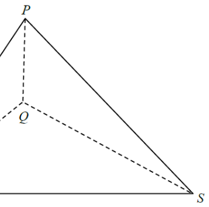

Topic 13 · Trigonometry — Cosine rule in 3-D tetrahedron | Interactive worked solution
The diagram updates automatically as you scroll through the steps on the right. Scroll inside this panel if the figure is cut off.
The figure shows a tetrahedron \(PQRS\) with the base \(QRS\) lying on the horizontal ground. It is given that \(Q\) is vertically below \(P\). If \(\angle PRQ = 47^\circ\), \(\angle PSQ = 53^\circ\) and \(\angle RQS = 120^\circ\), find \(\angle RPS\) correct to the nearest degree.

Base \(QRS\) is horizontal and \(Q\) is vertically below \(P\),
so \(PQ \perp\) plane \(QRS\). Hence \(PQ \perp QR\), \(PQ \perp QS\) and \(PQ \perp RS\)-plane, giving
$$\angle PQR = \angle PQS = 90^\circ.$$
In \(\triangle PQR\): \(\ \dfrac{PQ}{PR}=\cos\angle PRQ=\cos 47^\circ.\)
In \(\triangle PQS\): \(\ \dfrac{PQ}{PS}=\cos\angle PSQ=\cos 53^\circ.\)
So \(\ PR=\dfrac{PQ}{\cos 47^\circ}\ \) and \(\ PS=\dfrac{PQ}{\cos 53^\circ}.\)
Let \(\theta=\angle RPS\). In \(\triangle PRS\),
$$RS^2=PR^2+PS^2-2(PR)(PS)\cos\theta. \tag{1}$$
Divide (1) by \(PR\cdot PS\) and rearrange:
$$\cos\theta=\frac{PR}{PS}+\frac{PS}{PR}-\frac{RS^2}{PR\cdot PS}.$$
From \(RS^2=QR^2+QS^2-2(QR)(QS)\cos\angle RQS\), i.e. \(\angle RQS=120^\circ\):
$$\frac{RS^2}{PR\cdot PS}=\frac{QR}{PR}\cdot\frac{QR}{PS}+\frac{QS}{PR}\cdot\frac{QS}{PS}-2\frac{QR}{PR}\cdot\frac{QS}{PS}\cos 120^\circ.$$
Here \(QR/PR=\sin 47^\circ\) and \(QS/PS=\sin 53^\circ\) (since \(\sin\angle PRQ=QR/PR\), \(\sin\angle PSQ=QS/PS\)).
$$\cos\theta=\frac{PR}{PS}+\frac{PS}{PR}-\frac{RS^2}{PR\cdot PS}$$ $$=\cos\angle PRQ\cos\angle PSQ-\cos\angle RQS+\sin\angle PRQ\sin\angle PSQ$$
(using \(PR/PS=\cos 47^\circ/\cos 53^\circ\) and \(PS/PR=\cos 53^\circ/\cos 47^\circ\),
which cancel the \(\sin^2\) terms).
$$\cos\theta=\cos 47^\circ\cos 53^\circ\cos 120^\circ+\sin 47^\circ\sin 53^\circ$$
$$\cos\theta\approx 0.681998\cdot 0.601815\cdot(-0.5)+0.731354\cdot 0.798636$$
$$\cos\theta\approx -0.205208+0.584093=0.378885$$
$$\theta=\cos^{-1}(0.378885)\approx 67.7365^\circ.$$
Correct to the nearest degree,
$$\angle RPS \approx 68^\circ.$$
Question. In the figure, \(Q\) is vertically below \(P\) and the base \(QRS\) is horizontal. It is given that \(\angle PRQ=40^{\circ}\), \(\angle PSQ=50^{\circ}\) and \(\angle RQS=110^{\circ}\). Find \(\angle RPS\) correct to the nearest degree.